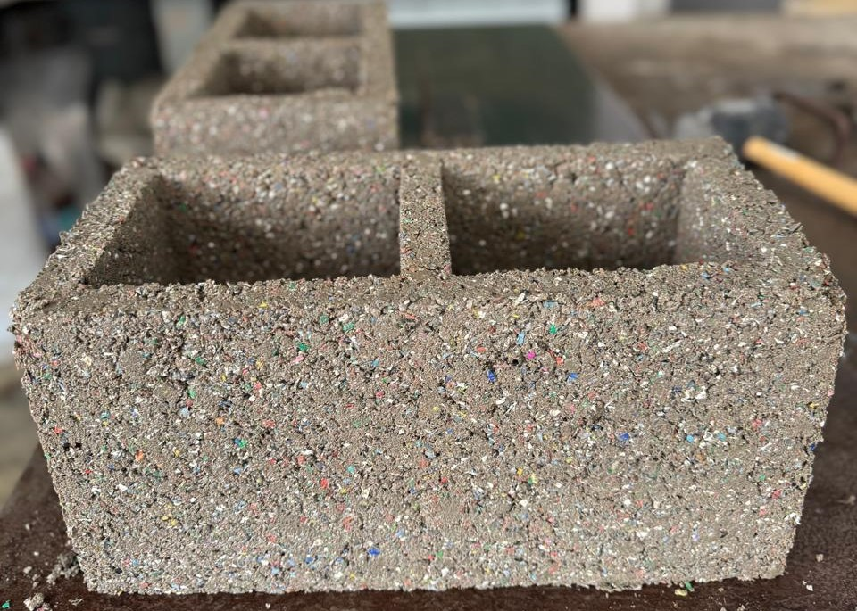
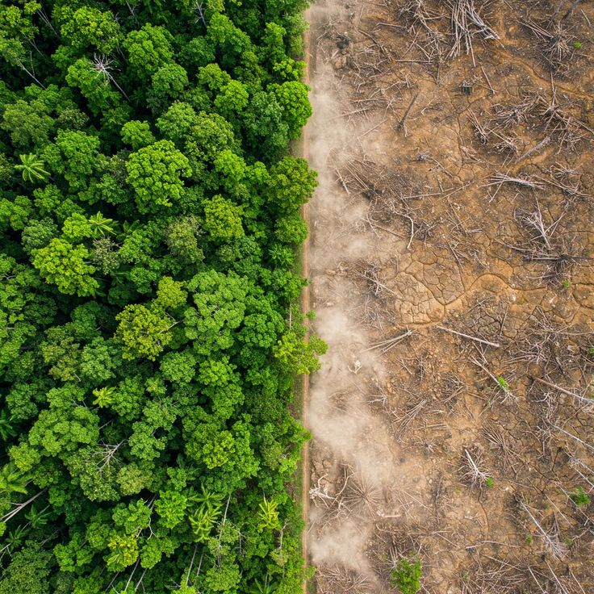
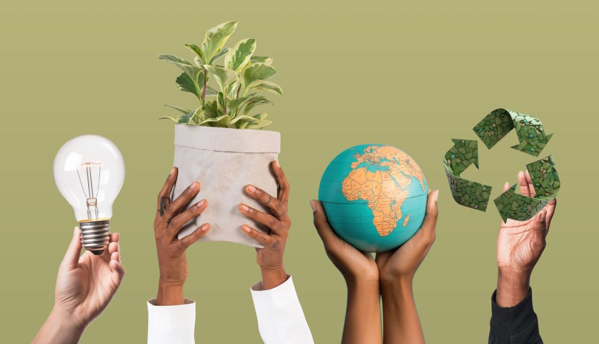

BioImpact: Transformando la Conciencia en Acción
¿Quiénes Somos?
BioImpact es una organización ecologica híbrida
de gestión privada arraigada a la comunidad
ambientalista de hace ya mas de 10 años por haya
en los años . Nacimos con el
propósito de no ser solo observadores del cambio
climático, sino arquitectos de soluciones tangibles.

Nuestra razón de ser es la gestión participativa:
creemos que el conocimiento más valioso sobre el
entorno reside en las comunidades que lo habitan.
Por ello, BioImpact se especializa en diagnosticar,
diseñar y ejecutar proyectos de restauración ambiental
que responden directamente a las denuncias y necesidades
de los ecosistemas locales. No imponemos soluciones;
escuchamos a la comunidad medioambiental para reparar
nuestro entorno de manera colectiva y técnica.
Nuestros Principios y Valores
Nuestra cultura organizacional se rige
por pilares que garantizan que cada
impacto sea positivo y duradero:
Escucha Activa y Co-creación
Entendemos que la comunidad es nuestra principal fuente de información. científicos locales y vecinos
para identificar las necesidades de medioambiental más urgentes.
Responsabilidad Restaurativa
nos enfocamos en la reparación del ecosistemas en un estado mejor del que los encontramos, aplicando
ingeniería ambiental de vanguardia para sanar suelos, cuencas y biodiversidad.
Innovación Adaptativa
El medio ambiente cambia, y nosotros con él. Abrazamos nuevas tecnologías y métodos de regeneración que sean
respetuosos con el equilibrio natural y económicamente sostenibles a largo plazo.
Equipo de BioImpact
- Sebastian Ignacio Montero
- - Enfocado en la gestión de proyectos y articulación con la comunidad.
- Lucía Nicole Caro
- - Orientada a la educación ambiental y desarrollo de contenidos.
- Lautaro Brea
- - Especializado en iniciativas de sustentabilidad e innovación.
- Nuñez Valentin Elias
- - Enfocado en la coordinación de campañas y logística.